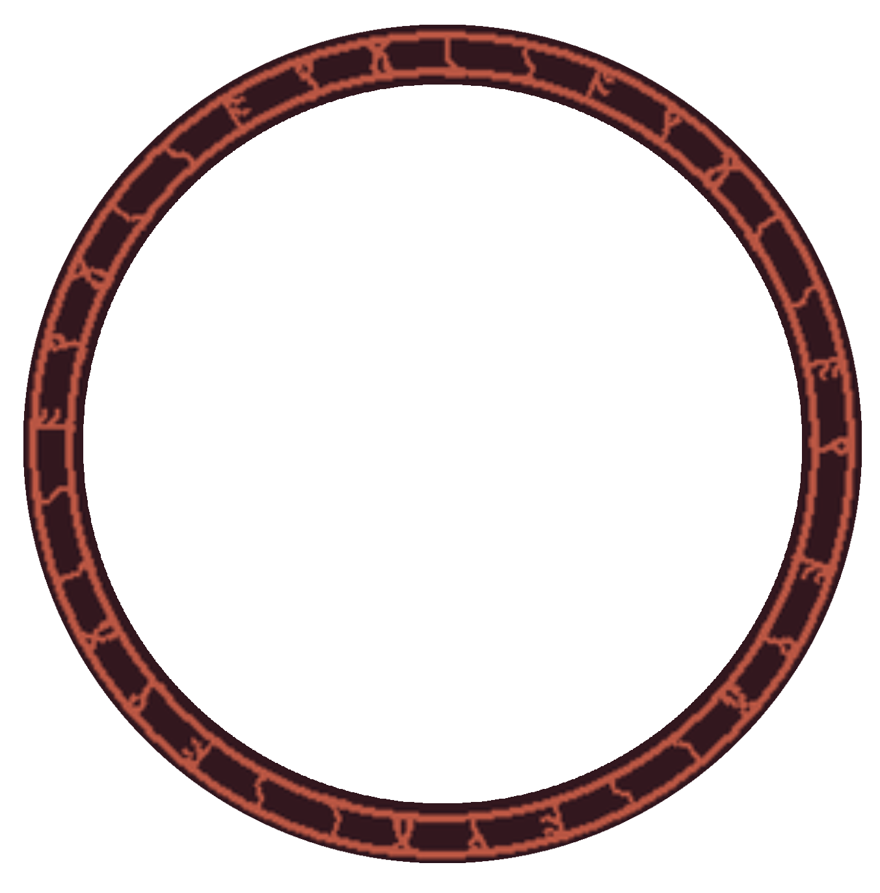
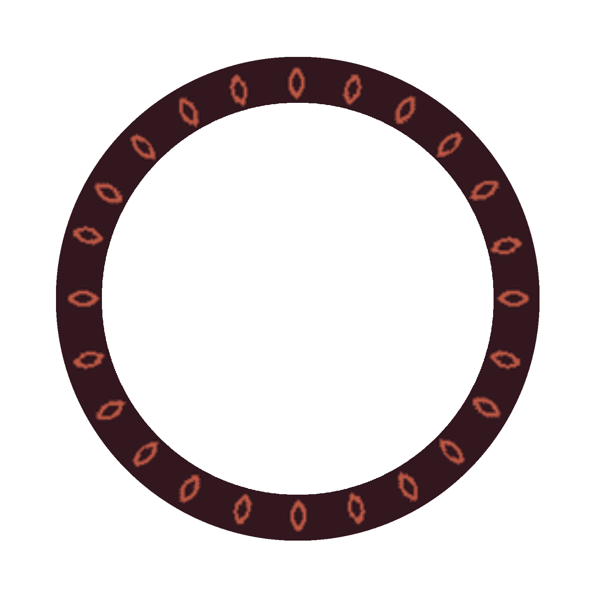
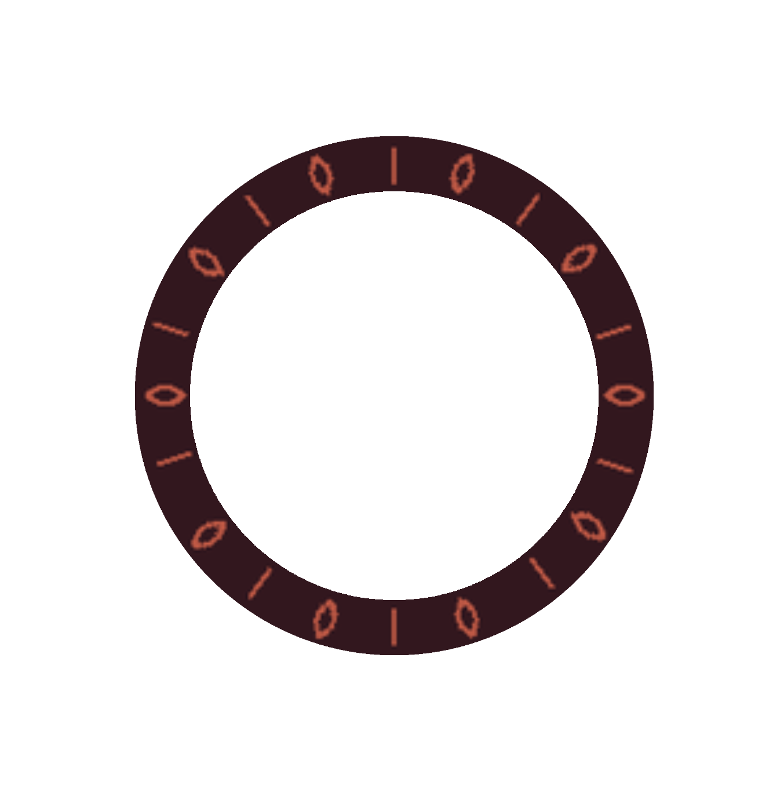
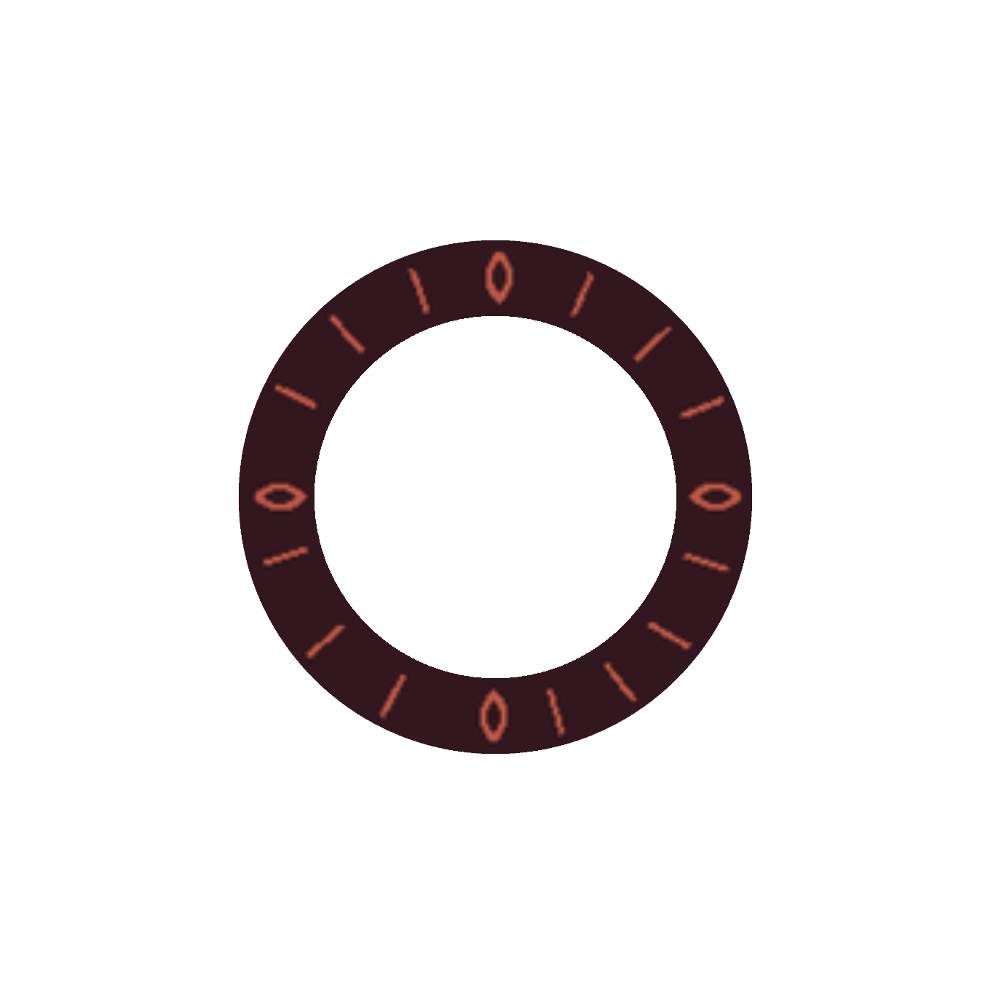
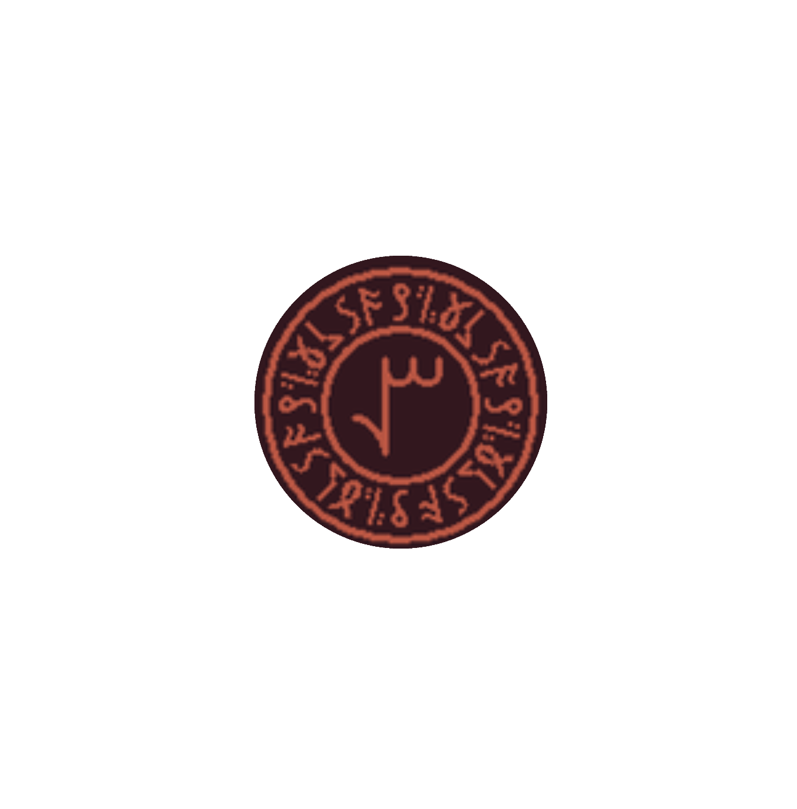
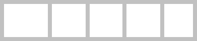
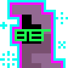

     
Restore
Save
Reset
Read as eyes instead of binary
Read from edge instead of from center
Invert arrow behavior
↑ ↑ ↑ ↑ ↑
↑
↑
↑
↑
↑
↓
↓
↓
↓
↓
↓ ↓ ↓ ↓ ↓
>
M000M
↓
Separator (\n = newline):
Copy
Clear

For questions/requests/bugs please message @SirReldar on Discord
Or, come visit me while I'm streaming on
Twitch